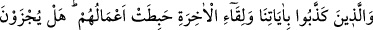
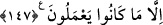

147. Halbuki ayetlerimizi ve ahirete kavuşmayı yalanlayanların amelleri boşa
çıkmıştır. Onlar, yapmakta oldukları amellerden başka bir şey için mi
cezalandırılırlar!
“Ayetlerimizi ve ahirete kavuşmayı yalanlayanların amelleri boşa çıkmıştır.”
Allah’ın ayetlerini yalanlayıp ahiret gününün varlığını ve orada Allah’ın huzuruna
çıkacaklarını kabul etmeyenlerin; sıla-ı rahim, darda kalmışlara yardım ve buna benzer
diğer amelleri boşa çıkacak ve bu amellerden hiç bir fayda göremeyeceklerdir.
“Onlar, yalnızca yaptıklarıyla cezalandırılmıyorlar mı?” Ancak işledikleri küfür ve
masiyetin cezasını çekeceklerdir.
et-Te’vîlâtü’n-Necmiyye’de şöyle denilmiştir: Onlar, kibirleri sebebiyle bizim
peygamberler göndermek, kitaplar indirmek ve mucizeler göstermek gibi amellerimizi
hiçe saydıkları için, biz de “ululuk” vasfına sahip oluşumuz, şirk ehline ve onların
şirkine muhtaç olmamamız sebebiyle onların amellerini hiç saydık. Bunun benzeri:
“Kötülüğün cezası, yine onun gibi bir kötülüktür” (eş-Şûrâ, 42/40) ayetidir.
Ayette tekebbür/büyüklenme yerilmiş ve onun beşer sıfatlarından Hakk’a perde
olanların en büyüğü olduğu bildirilmiştir. Çünkü o benliği artırır. İblis, sırf
büyüklenmesi sebebiyle lanete uğramış ve huzur-i ilâhîden kovulmuştur.
Beliğlerden (güzel söz söyleyenlerden) biri, mütekebbiri şöyle vasfetmiştir: “Sanki
hizmetkârı Kisrâ, geçimini temin eden Kârûn ve dadılarından birisi de Belkıs. Sanki
Yûsuf yalnız onun gözüyle bakmış, Lokman da sadece onun hikmetiyle konuşmuş. Sanki
yeryüzü onun için döşenmiş, yeşillikler onun için yayılmış.”
Mesnevî’de de şöyle geçmektedir:
Bu ululuk, bil ki zehirli bir şaraptır
O zehirli şarapla aptal bir kişi sarhoş olur
Bir devletsiz, zehirli şarabı içince
Bir zaman neşeden başını sallar ama
Bir an sonra zehir, canına tesir eder
Can verip can almaya başlar
Onun zehirli olduğuna inanmıyorsan
Bak da gör, Ad kavmine o zehir neler etti
Bir padişah başka bir padişahı esir edince
Ya öldürür, ya da zindana hapseder
Fakat bir düşkün dertliyi görse
Derdine merhem bulur, ona ihsanlar eder